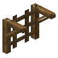

云杉木格架
Spruce Lattice
英文名: Spruce Lattice命名空间 ID:
vinery:spruce_lattice类型: 方块所属模组: [Let's Do] Vinery资料检索: 🔎 在 MC百科 搜索「云杉木格架」所属标签
合成获得 (1)


原始 JSON
{
"type": "minecraft:crafting_shaped",
"group": "vinery_lattices",
"pattern": [
"///",
" B ",
"/ /"
],
"key": {
"/": {
"item": "minecraft:stick"
},
"B": {
"item": "minecraft:spruce_planks"
}
},
"result": {
"count": 4,
"id": "vinery:spruce_lattice"
}
}